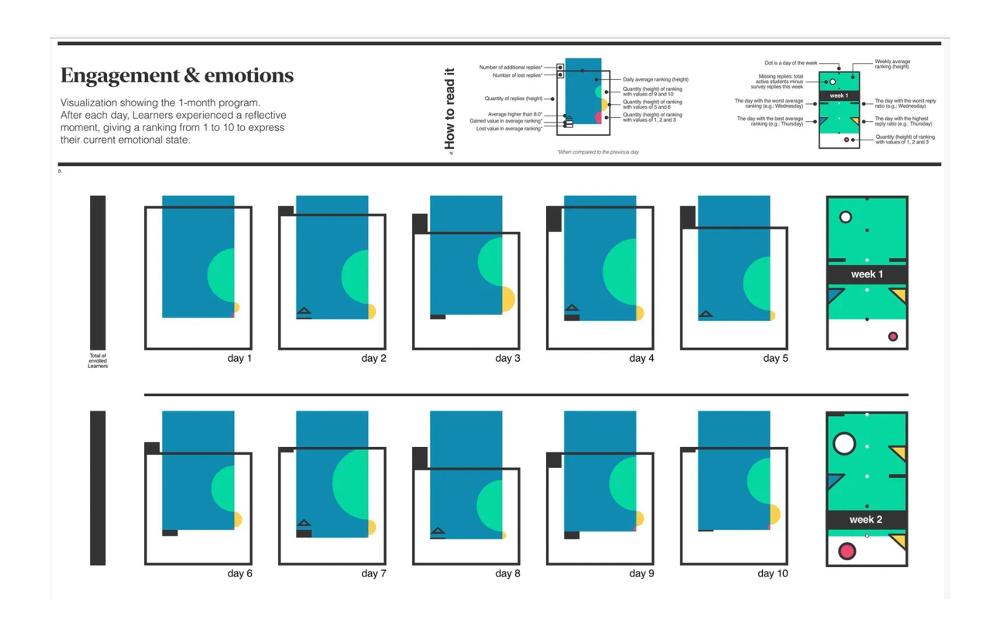

Feb 2026
UX Design
What happens when we stop designing exclusively for people? This article challenges the limits of traditional user-centred design and explores how non-human actors, environments, and systems can become part of the design process.
Read on Create with Swift ↗
Jan 2026
Branding
The first wave of AI tools taught us how to move faster. The next question is how they can help us create with more intention. This article explores AI as a creative partner for indie creators, helping shape brand identity, cultural relevance, and emotional resonance without losing the human point of view.
Read on Create with Swift ↗
Oct 2024
Learning

Humanistic Data Art Visualization for Analyzing Learner Growth in Challenge Based Learning Programs
How can data help us understand learning without reducing learners to numbers? This perspective explores humanistic and artistic approaches to visualising learner growth in dynamic, experiential Challenge Based Learning programmes.
Read on Fronteirs ↗
Dec 2025
Ethics
Mobile interfaces are intimate. We carry them everywhere, interact with them constantly, and often trust them with deeply personal information. This article explores the responsibility designers and developers have in shaping behaviour, expectations, and trust.
Read on Create with Swift ↗
Nov 2025
Data Visualization
Mobile apps constantly turn our lives into data. We generate an astonishing 402.74 million terabytes of data every day. This article explores how humanist data visualisation can move beyond simply presenting information, creating experiences that help people understand data while keeping the human experience at the centre.
Read on Create with Swift ↗
Oct 2025
UX Design
Designing for connection requires more than creating efficient interactions. This article explores how digital products can create space for authenticity, emotional connection, and meaningful human experiences.
Read on Create with Swift ↗
Aug 2025
Branding
Design communicates more than what a product looks like. It reflects choices, values, and beliefs. This article explores how design and consumption have become increasingly connected to identity and self-expression.
Read on Create with Swift ↗
Jul 2025
Design + AI
AI is changing not only how designers work, but what design itself can become. This article explores the tension between new creative possibilities and the risk of increasingly homogeneous, algorithm-driven experiences.
Read on Create with Swift ↗
Jul 2025
UX Design
Design is often presented as a practice grounded in empathy and positive intent. But the same principles can be used to manipulate, deceive, and exploit. This article examines the darker side of product design and the responsibility that comes with shaping behaviour.
Read on Create with Swift ↗
Mar 2025
UX Design
What happens when digital products gradually stop serving the people who use them? Exploring Cory Doctorow’s concept of “enshittification,” this article looks at how short-term incentives can turn useful services into increasingly extractive experiences.
Read on Create with Swift ↗
Jan 2025
UX Design
A digital product is never in just one state. Onboarding, loading, success, empty states, errors, and first-time and returning users all create different moments in an experience. This article explores how designing for these transitions can make products feel more responsive, useful, and human.
Read on Create with Swift ↗
Jan 2025
UX Writing
Errors are inevitable. Frustration doesn’t have to be. This article explores how thoughtful error messages can turn moments of failure into opportunities to guide, reassure, and support people.
Read on Create with Swift ↗
Jan 2025
Product Design
Sustainability asks designers to look beyond the immediate interaction and consider the wider systems behind digital products. This article explores how human-centred design can mature to account for environmental impact and the long-term consequences of our design decisions.
Create with Swift ↗
Jan 2025
Design
A design system is more than a collection of reusable components. It is a shared language of decisions that helps teams create coherent experiences across products and contexts. This article explores what makes a design system useful, sustainable, and meaningful.
Read on Create with Swift ↗
Sep 2024
UX Design
Not every digital journey is meant to live forever. This article explores the often-overlooked experience of ending a relationship with a digital product: from completing a task to leaving a service and deciding what should happen to our data afterwards.
Read on Create with Swift ↗
Jul 2024
UX Writing
Words are part of the interface. From buttons and labels to instructions and feedback, the language of a product shapes how people understand and navigate it. This article explores how thoughtful UX writing can make digital experiences clearer, more useful, and more human.
Read on Create with Swift ↗